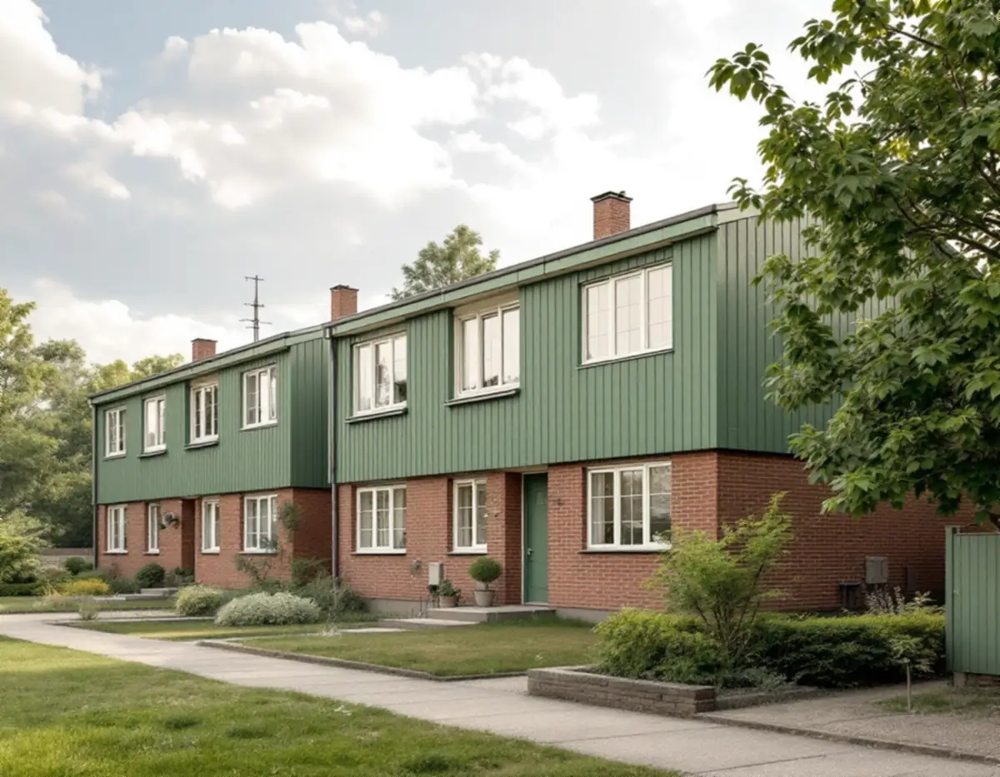
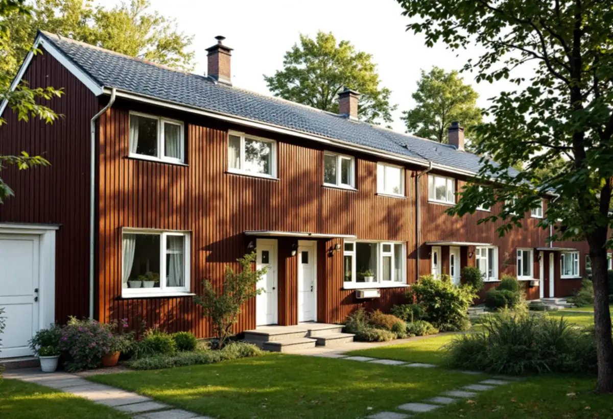
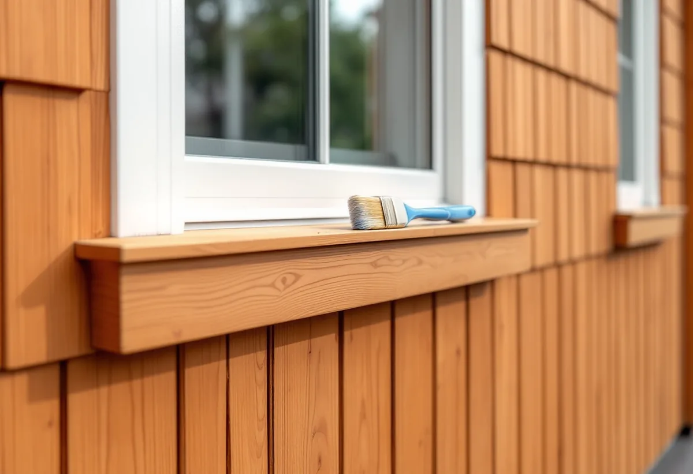

Platsbesök
Fasadmaterial, färgtyp och husgruppens kulörer går vi igenom.

Småhusen i Bredäng, Sätra, Vårberg och Skärholmen byggdes i grupp på 1960- och 70-talen, och kulörerna valdes för hela gruppen.
Beskriv jobbet kort.
Något blev fel. Kontrollera uppgifterna eller ring 08 12 410 276.
Vi tittar på jobbet på plats innan du får offert.
Du ser vad som ingår och vad det kostar.
Vi drar av ROT direkt och sköter ansökan.
Geal Entreprenad AB, Bromma. Org.nr 559303-7566.

Geal Entreprenad AB målar om fasader på radhus, kedjehus och villor i Skärholmen och utgår från husgruppens färgsättning.
Stadens strategi för småhusområden beskriver Bredäng som den första stadsdelen som planerades i stor skala, med byggstart 1962, följd av Sätra. En stor andel av miljonprogrammets bebyggelse bestod av gruppbyggda småhus och radhus. Exempel på villor och atriumhus i de storskaliga stadsdelarna finns enligt strategin bland annat i Sätra.
Enligt stadens områdesfakta för 2025 finns 1 976 småhus med äganderätt i Skärholmens stadsdelsområde: 577 i Vårberg, 543 i Skärholmen, 536 i Sätra och 320 i Bredäng.

Strategin skriver att småhusen i de storskaliga stadsdelarna ofta hade en blandning av fasadmaterial, som tegel, trä och skivor, men att enhetligheten inom husgrupperna var mycket stor. Färgsättningen var noga komponerad och enhetlig, men kunde variera mellan olika kvarter eller områden.
Bland det som har stor påverkan vid förändringar nämner strategin material, färgsättning, byggnadsdelar och detaljer, och den råder att karaktärsskapande kulörer tas tillvara eller återskapas vid renoveringar. En ny kulör på ett radhus mitt i en länga bryter därför gruppens uttryck, även när det inte krävs lov.
I strategins tabell är Bredäng markerat som kulturhistoriskt värdefull miljö. Stockholms stad påpekar att utökad lovplikt gäller i särskilt kulturhistoriskt värdefulla byggnader och områden, och att du då behöver bygglov även för åtgärder som annars är lovfria. Stadsmuseets klassificeringskarta ger en första indikation på om din fastighet berörs.
Boverket förklarar att en ny kulör, till exempel från rött till vitt, är en fasadändring, medan ommålning i samma kulör normalt är underhåll. På en villa utanför värdefulla miljöer krävs inget lov för ny kulör, men en fasadändring som inte kräver lov ska ändå stämma med detaljplanen.
Boverket skriver att byggnader från perioden 1940–1980 sannolikt innehåller asbest någonstans, och nämner fasadskivor bland de produkter där den kan finnas. Arbetsmiljöverket räknar målning till de arbeten där man kan utsättas för asbesthaltigt damm, och skriver att det ska vara klarlagt om det finns asbest innan arbetet börjar.
Har radhuset skivor från byggtiden tar vi därför reda på vad de består av innan förarbetet planeras. Analys av ett prov är det enda säkra sättet att veta. Visar provet asbest planeras förarbetet efter det, och delar som ska rivas eller saneras hanteras av ett företag med tillstånd från Arbetsmiljöverket.
Strategin konstaterar att småhusen i de storskaliga stadsdelarna står på små tomter, vilket begränsar större förändringar, men att påbyggnader förekommer och att mindre tillbyggnader är vanliga, till exempel inglasade uterum. Under 2000-talet har stadsdelarna också kompletterats med nya radhus inom den ursprungliga planstrukturen.
När en fasad ska målas om finns det därför ofta både ursprungliga delar och senare tillägg i samma husgrupp. Vi målar tilläggen så att de ansluter till huvudbyggnaden i kulör och färgtyp, och vi ser över anslutningar mellan uterum och fasad där vatten kan tränga in.
På ett radhus från den här tiden målas ofta flera material: träpanel och vindskivor, skivor, dörrar och fönsterfoder. Vi skrapar fram äldre färglager på en liten yta för att se färgtyp och ursprunglig kulör och väljer färg som passar varje underlag. Byts en kulör i hela gruppen samtidigt kan ställning och leveranser samordnas mellan husen.
Om tjänsten i stort kan du läsa under målare, och om stadsdelens tak under takläggare i Skärholmen.
Fasadmaterial, färgtyp och husgruppens kulörer går vi igenom.
Misstänkta skivor analyseras innan förarbetet planeras.
Varje material och moment står för sig.
Kulören stäms av mot gruppen och mot kartan om huset ligger i Bredäng.
Förarbete, grundning och strykning i rätt färgtyp.
Vi går igenom resultatet och skriver ner kulörerna.
Skatteverket räknar målning av fasader på ett småhus som rotarbete. Sanering av asbest i samband med byggarbete ger också avdrag, men att mäta asbest gör det inte.
Avdraget är högst 30 procent av arbetskostnaden, högst 50 000 kronor per person och år och högst 75 000 kronor tillsammans med rutavdrag. Färg, material och resor ger inget avdrag. Geal drar avdraget direkt på fakturan.
Fasadens yta, antalet material, underlagets skick, detaljer som vindskivor och foder och om prov behöver tas. Efter ett gratis platsbesök får du ett skriftligt kostnadsförslag.
Fasad, fönster och invändig målning.
Målare i Stockholm →Takbyte, takbesiktning och plåtarbeten.
Takläggare i Skärholmen →Radhus i grupper i Bredäng, Sätra och Vårberg.
Takrenovering i Skärholmen →Radhustomterna och grannarna.
Attefallshus i Skärholmen →Radhusen, källarplanet och golvbrunnen.
Badrumsrenovering i Skärholmen →Hela ombyggnaden av radhuset.
Byggföretag i Skärholmen →Fasader på radhus och kedjehus.
Fasadrenovering i Skärholmen →Radhus i sammanhållna husgrupper.
Fönsterbyte i Skärholmen →Miljonprogrammets radhus.
Fönsterrenovering i Skärholmen →Nya golv i radhus och lägenheter.
Golvläggare i Skärholmen →Parkett och lamellgolv från 1960-talet.
Golvslipning i Skärholmen →1960-talskök, bostadsrätt och radhus.
Köksrenovering i Skärholmen →Lägenheter, trapphus och radhus.
Målare i Skärholmen →Rännor och stuprör i sluttningarna.
Plåtslagare i Skärholmen →Altan, plank och förråd vid radhuset.
Snickare i Skärholmen →Egna radhus i Sätra, Bredäng och Vårberg.
Takbyte i Skärholmen →Ny tapet i hyresrätt och bostadsrätt.
Tapetsering i Skärholmen →Radhusen, uterum och skärmtak.
Tillbyggnad i Skärholmen →Renovera hela huset eller lägenheten.
Totalrenovering i Skärholmen →Eller ring 08 12 410 276, mån–fre 08–17.
Beskriv jobbet kort.
Något blev fel. Kontrollera uppgifterna eller ring 08 12 410 276.